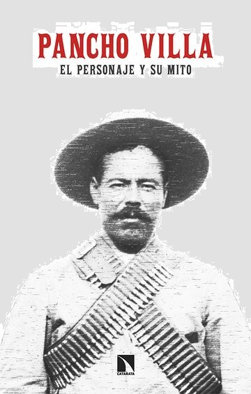

Francisco “Panchito” Peña: Una Leyenda del Béisbol en Ceballos
Panchito Peña fue un destacado jugador de béisbol en la región. Inició reforzando a
los Leones de Don Emilio de León en un juego contra Escalón, Chihuahua, donde conectó varios jonrones...
Entre 1980 y 1985 dejó huella en el béisbol local, y en 1986-87 jugó como cátcher para Ceballos en el regional de
Jiménez. Además, fue parte del equipo Venustiano Carranza, con el que se coronó campeón en la liga de Ceballos.
Su talento y entrega lo convirtieron en una leyenda viviente del deporte en la comunidad.
*El Enfrentamiento de Pancho Villa con un Cadete Español*
Pancho Villa se enfrentó a un cadete español que maltrataba a un niño
mexicano y su madre. Con valentía y justicia, Pancho Villa intervino y propuso un duelo...
La pelea fue intensa, pero la madre del niño lanzó una piedra que dejó inconsciente al
cadete. Pancho Villa aprovechó la oportunidad para acabar con la amenaza.
Este episodio muestra la valentía y justicia de Pancho Villa, un líder revolucionario
que luchó por la libertad y dignidad de su pueblo.

Historia del Museo
El Museo Revolución de Ceballos fue fundado para preservar la memoria de los héroes locales y eventos importantes durante la Revolución Mexicana en el norte del país...
Horarios de visita
Lunes a Viernes: 9:00 AM - 5:00 PM
Sábados y Domingos: 10:00 AM - 4:00 PM
Entrada libre
La Historia de Doña Amada y el Restaurante Elvira en Ceballos
En la escuela, los profesores mostraban gran interés en el origen de Ceballos. Un lugar clave en la historia del pueblo fue el Restaurante Elvira, fundado por Doña Amada, quien comenzó vendiendo comida en una pequeña mesa, posiblemente para trabajadores agrícolas y forasteros...
Con el paso del tiempo, Doña Amada envejeció, pero su legado continuó gracias a sus hijas, quienes mantuvieron viva la tradición del restaurante. En los años 70, aún se le podía ver sentada con su cabello canoso y sus largas faldas, siempre acompañada...